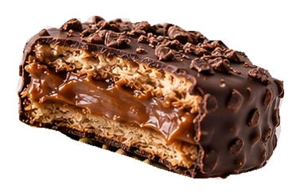
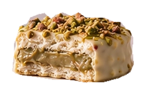

HOLA, SOMOS LOS ALFAJORES DE LAUREN.
Un alfajor.
Mil antojos.
Dos tapas suaves. Un relleno que se roba
el show. ¿Cuál va a ser tu favorito?
relleno.


EL MENÚ · COLECCIÓN 01
Tu próximo favorito
está por aquí.
Cuatro formas de decir «solo uno más».
Sabores y precios de muestra · COPCOMPARTIR ES OPCIONAL.
Tu caja.
Tus reglas.
El clásico para ti. El de pistacho para probar.
O cuatro del mismo. Aquí mandas tú.
Combina los sabores. El total se calcula con tu selección.
de favoritos.
EL LADO MÁS DULCE DE LAUREN
Hay antojos que
merecen su momento.
Para acompañar un café, sorprender a alguien
o guardar el último solo para ti.
ANTES DEL PRIMER MORDISCO
¿Una
preguntita?
¿Puedo mezclar los sabores?
Sí. Prueba el armador de cajas y combina 4, 6 o 12 alfajores. Puedes repetir tu favorito. La página suma el precio de los sabores que elijas.
¿Puedo elegir un solo alfajor?
Sí. El botón «Añadir» de cada sabor agrega una unidad a tu selección. Puedes cambiar las cantidades en la bolsa de la esquina superior.
¿Ya se puede hacer un pedido real?
Esta es una demostración navegable de la nueva web de Lauren. Puedes armar cajas y guardar tu selección, pero todavía no se envían pedidos ni se realizan cobros. Los precios, las recetas y las imágenes son de muestra.
¿Dónde veo los ingredientes?
Abre «Conócelo» en cada sabor para ver su receta conceptual. La ficha definitiva de ingredientes, alérgenos y conservación deberá confirmarse con Lauren antes de vender estos productos.
¿YA TIENES UN FAVORITO?